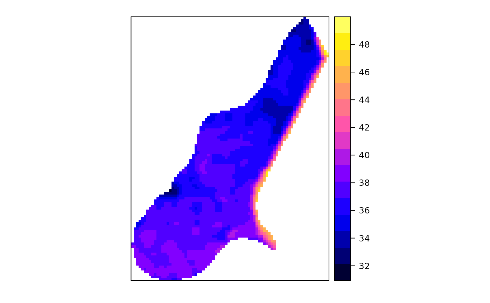
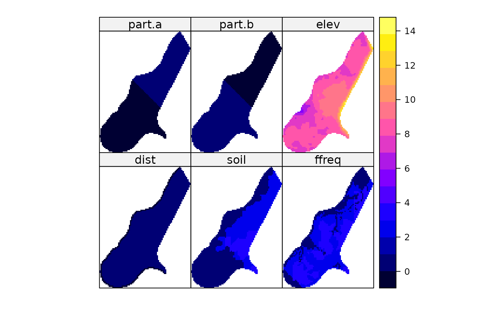

The meuse.grid data frame represents a spatial grid with 40 m x 40 m spacing that covers the Meuse study area.
This dataset is often used for spatial interpolation and geostatistical analysis in the context of environmental modeling.
Usage
data(meuse.grid, package = "spEnviroDistr")Format
A data frame with 3103 observations on the following 9 variables:
- x
A numeric vector representing the x-coordinate in the RD New (Rijksdriehoek) topographical map coordinate system of the Netherlands.
- y
A numeric vector representing the y-coordinate in the RD New system.
- part.a
An arbitrary division of the study area into two parts, labeled as 'a'.
- part.b
The complementary division of the study area, labeled as 'b'.
- elev
Relative elevation above the local river bed in meters.
- alt
Altitude above sea level in meters, derived from the
meuse.altdataset, which contains altitudes digitized from the 1:10,000 topographical map of the Netherlands.- dist
Distance to the Meuse river, derived from a spatial distance operation in a GIS; normalized to \([0,1]\).
- soil
Soil type. These classifications are not based on a specific soil map and may not match published soil maps at a scale of 1:50,000.
- ffreq
Flooding frequency class. The exact method of generating this classification is unknown. For definitions, see the
meusedataset.
Details
The x and y coordinates are provided in the RD New coordinate system, which is the standard topographical map projection for the Netherlands.
These coordinates were projected to UTM using the R-Grass interface package by Roger Bivand.
The alt variable represents altitude above sea level, digitized from the 1:10,000 topographical map of the Netherlands as part of the meuse.alt dataset. This provides a detailed elevation model for the Meuse study area.
The meuse.grid dataset is commonly used in conjunction with the meuse dataset for spatial prediction and kriging exercises, where the grid serves as the prediction surface.
References
Gstat: A Program for Geostatistical Modelling, Prediction and Simulation. URL: http://www.gstat.org/
Bivand, R. S., Pebesma, E., & Gómez-Rubio, V. (2013). Applied Spatial Data Analysis with R (2nd ed.). Springer. doi:10.1007/978-1-4614-7618-4
Examples
data(meuse.grid, package = "spEnviroDistr")
coordinates(meuse.grid) <- ~x+y
proj4string(meuse.grid) <- CRS("+init=epsg:28992")
gridded(meuse.grid) <- TRUE
# Visualize the elevation data
spplot(meuse.grid, "alt")

# Visualize multiple variables
spplot(meuse.grid, c("dist", "soil", "ffreq", "part.a", "part.b", "elev"))
